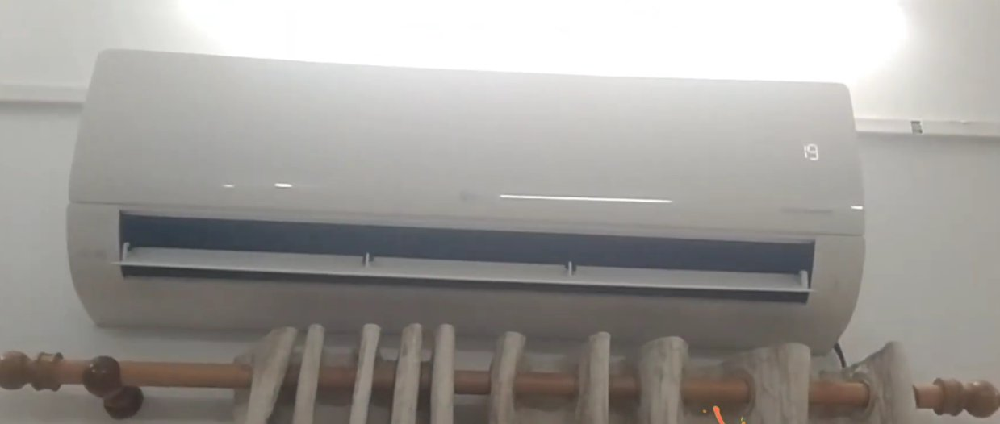
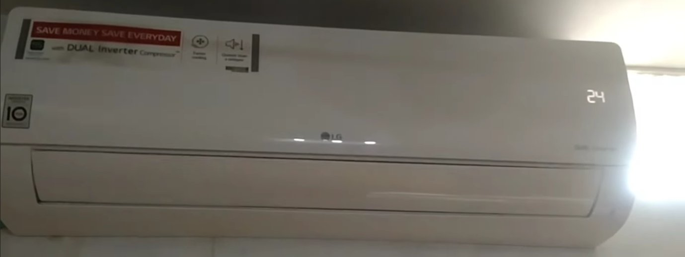
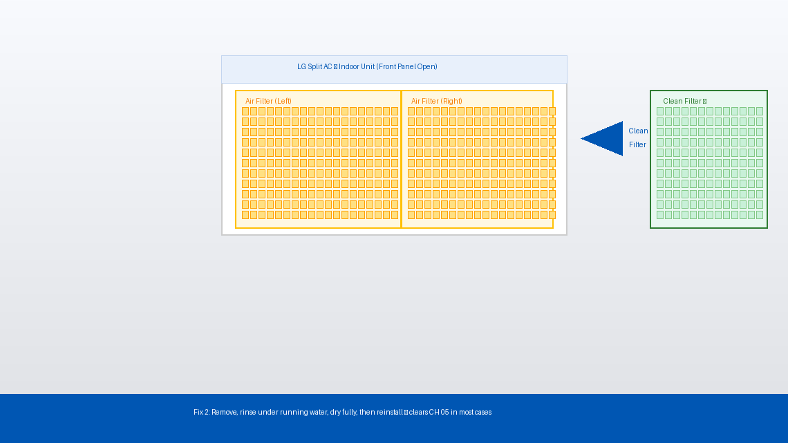
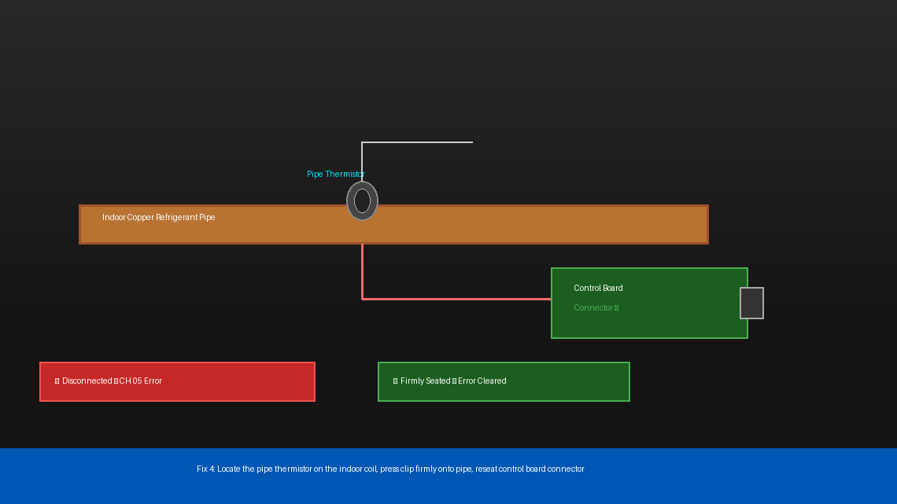
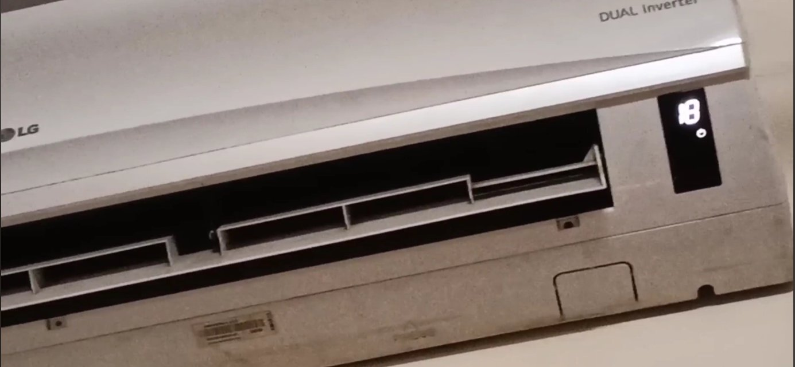

You Walked In Expecting Cool Air. You Got CH 05.
There’s nothing worse than your air conditioner quitting on you in the middle of a scorching summer afternoon. You walk into the room expecting cool relief, and instead you’re greeted by a blinking display, warm air, and two little characters that make your stomach drop: CH 05.
You grab the remote and try restarting it. It blinks. You turn it off and on at the breaker. Same error. You stare at the unit like it owes you an explanation — and honestly, it does.
The good news is that CH 05 is one of the more straightforward LG AC error codes to diagnose. It’s not a compressor failure, it’s not a refrigerant leak, and in many cases it doesn’t require a technician at all. A lot of people clear this error themselves in under thirty minutes with nothing more than a screwdriver and a soft brush.
This guide walks you through exactly what CH 05 means, what’s causing it, and how to fix it — step by step, simplest first.

What Does Error Code CH 05 Mean?
In plain English, CH 05 means your LG air conditioner’s indoor unit is detecting an abnormal temperature reading from its pipe sensor — specifically, the indoor heat exchanger pipe temperature sensor (also called the indoor pipe thermistor).
Here’s what’s actually happening inside your unit:
Your AC has a small sensor attached directly to the copper refrigerant pipe inside the indoor unit. This sensor constantly measures the pipe’s temperature and reports it to the control board. The control board uses this reading to regulate cooling cycles, prevent the coils from freezing, and protect the compressor from damage.
When the control board receives a temperature reading that falls outside the expected range — either because the sensor itself has failed, the wiring connecting it has come loose, or the reading is genuinely abnormal due to a clogged filter or frozen coil — it throws up CH 05 and shuts the system down as a precaution.
The three most common causes are:
- A dirty or clogged air filter pushing the pipe temperature outside normal operating range
- A faulty or disconnected indoor pipe thermistor sending garbled readings to the control board
- Ice buildup on the indoor coil caused by restricted airflow, which confuses the temperature sensor entirely
In most cases, it’s the filter or the sensor connection — both of which you can check and fix yourself.

Tools You’ll Need
Gather these before you start. You won’t need all of them for every fix, but having them ready saves time.
- A Phillips head screwdriver
- A soft brush or old toothbrush (for cleaning)
- A vacuum cleaner with a brush attachment
- A multimeter (only needed if you’re testing the thermistor — optional for most fixes)
- A dry cloth or paper towels
- About 20–30 minutes of your time
Step-by-Step Fixes (Easiest to Hardest)
Work through these in order. Start with the easiest and only move to the next if the error comes back after restarting the unit.
Before anything else, give the unit a proper reset. A temporary sensor glitch — caused by a power surge or brief voltage fluctuation — can trigger CH 05 even when nothing is physically wrong. A hard reset clears it.
- Turn the AC off using the remote or the power button on the unit.
- Walk to your electrical panel and switch off the circuit breaker that powers the AC.
- Wait a full 5 minutes — not 30 seconds, not two minutes. Five minutes allows all residual power to drain from the control board completely.
- Switch the breaker back on.
- Turn the AC on and observe the display for 2–3 minutes.
If the error doesn’t reappear and the unit starts cooling normally, a voltage spike was likely the cause. If CH 05 comes back within a few minutes, move on.
A severely clogged air filter is one of the most overlooked causes of CH 05. When airflow is restricted, the indoor coil temperature drops abnormally — sometimes low enough to trigger the pipe sensor alarm or cause ice to form on the coil.
- Turn off the AC and switch off the breaker.
- Open the front panel of the indoor unit — it typically lifts or swings upward. No screwdriver needed for most LG models.
- Slide out the air filter(s). LG split AC units usually have two mesh filters, one on each side.
- Hold the filters up to a light source. If you can’t see light clearly through the mesh, they’re overdue for cleaning.
- Take the filters outside or to a sink and rinse them gently under running water. For heavy dust buildup, use a soft brush to work through the mesh from the back side.
- Shake off excess water and allow the filters to dry completely before reinstalling — wet filters restrict airflow and can cause mould.
- Slide the dry filters back in, close the front panel, restore power, and turn the AC on.
If the unit runs without throwing CH 05, dirty filters were the entire problem. Consider cleaning them every 2–4 weeks during heavy use season.

If the filters were reasonably clean but CH 05 is still showing, check whether the indoor coil has iced over. A frozen coil sends the pipe sensor reading plummeting, which the control board interprets as a fault.
- Turn the AC off and switch off the breaker.
- Open the front panel and look past the filters at the fins and copper pipe behind them.
- If you see frost or ice on the coil or pipe, the unit needs to thaw before it will work properly.
- Leave the front panel open and allow the unit to sit — unpowered — for 1 to 2 hours until all ice has melted. Place a dry towel underneath the indoor unit to catch drip water.
- Once fully thawed, clean the filters (Fix 2 above), restore power, and run the unit on Fan Only mode for 20 minutes before switching back to cooling.
Ice buildup is almost always caused by restricted airflow (dirty filter) or low refrigerant. If the coil ices up again within a day or two after cleaning, you likely have a refrigerant issue — skip ahead to “When to Call a Professional.”
If the unit is clean, not frozen, and still throwing CH 05, the thermistor sensor itself is the most likely culprit. The sensor is a small probe — about the size of a pencil eraser — clipped directly onto the indoor copper pipe. It can work loose from vibration over time, or its connector can corrode or disconnect from the control board.
- Turn off the AC and switch off the breaker. Wait 5 minutes.
- Remove the front panel of the indoor unit (lifts upward on most LG models).
- On some models, you’ll need to remove 2–3 screws along the bottom edge of the housing to expose the internal components — use your Phillips screwdriver.
- Locate the pipe thermistor — it’s a small sensor clipped onto the copper refrigerant pipe, with a thin wire running from it to the control board. It typically has a white or brown plastic clip holding it to the pipe.
- Check that the sensor is firmly seated against the pipe and the clip is intact. If it has fallen off or shifted, press it firmly back onto the pipe until the clip clicks into place.
- Trace the wire from the sensor to where it plugs into the control board. Gently press the connector in to ensure it’s fully seated — a half-connected plug is enough to throw CH 05.
- Reassemble the unit, restore power, and test.

If reseating the sensor didn’t help, the thermistor itself may have failed. A functioning pipe thermistor should have a measurable resistance — if it reads open circuit (infinite resistance) or short circuit (zero resistance), it needs to be replaced.
- Power off and unplug the unit completely.
- Remove and disconnect the thermistor from the control board connector.
- Set your multimeter to resistance (Ω) mode.
- Touch the multimeter probes to the two pins of the thermistor connector.
- At room temperature (around 25°C / 77°F), a healthy LG pipe thermistor typically reads between 5kΩ and 10kΩ. The exact value varies by model — check your unit’s service manual for the precise spec.
- If the reading is “OL” (open loop/infinite) or “0”, the thermistor has failed and needs to be replaced.
Replacement thermistors for LG AC units are widely available online for around ₹200–₹500 (India) or $5–$15 (US). Make sure to match your model number when ordering — the part number is printed on the sensor itself or in your unit’s documentation.

When to Call a Professional
CH 05 is one of the more DIY-friendly LG error codes, but there are situations where continuing to troubleshoot on your own isn’t the right call:
- The coil ices up repeatedly within 24–48 hours of cleaning the filters and thawing the unit. This is a strong indicator of low refrigerant (gas leakage), which requires a licensed technician with specialized equipment to diagnose and refill. Refrigerant handling is regulated in most countries and cannot legally be performed without certification.
- The thermistor tests fine but CH 05 persists after reconnecting everything. The fault may lie with the control board itself — a failed board is misreading a perfectly good sensor. Control board diagnosis and replacement is not a DIY job.
- You’re not comfortable removing the internal housing panels. There is no shame in this at all. The capacitor inside an AC unit stores enough charge to cause serious injury even when the unit is unpowered — if you’re not experienced with appliance electronics, stop at Fix 3 and call a technician.
- The unit is still under LG’s warranty. LG offers a standard compressor warranty of up to 10 years and a parts warranty on most models. Attempting internal repairs yourself can void the warranty — check your documentation before opening the housing.
To find a certified LG service technician in your area, visit lg.com/in/support (India) or lg.com/us/support (US) and use the Service Center Locator with your model number and pin code.
Quick Summary
| Fix | Difficulty | Time Needed |
|---|---|---|
| Hard reset via circuit breaker | Very Easy | 5 minutes |
| Clean or replace the air filter | Easy | 15 minutes |
| Thaw ice buildup on the indoor coil | Easy | 1–2 hours (passive) |
| Reseat the pipe thermistor and connector | Moderate | 20 minutes |
| Test thermistor resistance with multimeter | Moderate | 15 minutes |
Start at the top. A surprising number of CH 05 errors are nothing more than a dirty filter or a loose sensor connector — problems that cost nothing to fix and take less than half an hour. Only move to the harder steps if the simple ones don’t stick.
Fixed your LG AC with one of these steps? The filter cleaning fix (Fix 2) solves it more often than people expect — make it a monthly habit during summer and you’ll see far fewer error codes across the board.